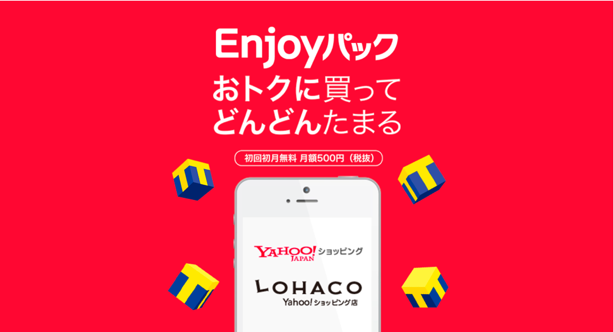
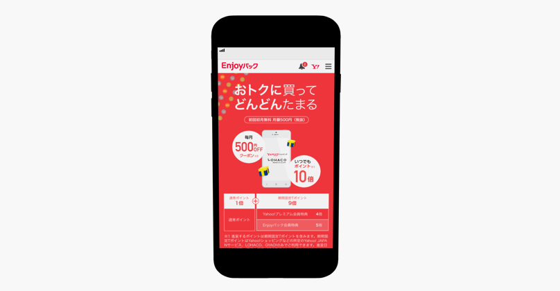
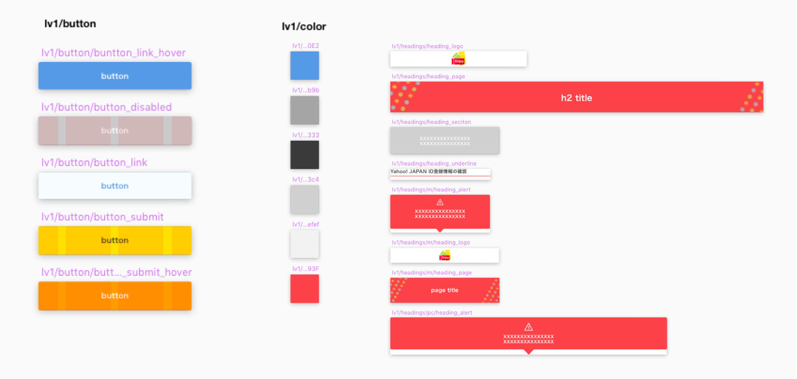
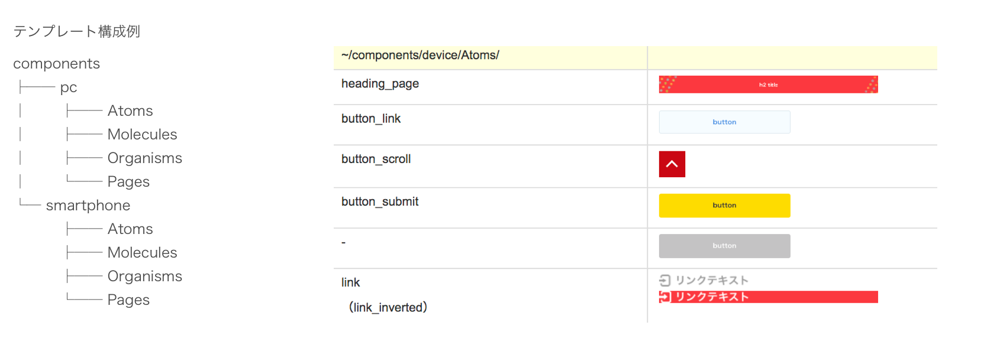
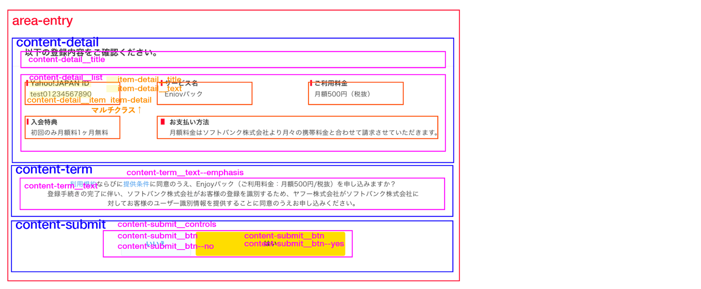

サービスリニューアル
2018


- 
- 概要
- サービスリニューアルに伴うWEBページ内のビジュアル作成，およびページの実装を担当．デザイン作業時にはatomic designを用いたコンポーネント設計，class名のルール策定，abstractおよびsketchの導入を導入しツールのモダン化も実施．開発時には，atomic designと親和性の高いVue.jsとNuxt.jsを採用し，開発環境の刷新を行なった．またSPページのみだったサービスページをPC向けにも最適化．スクラムを用いてメンバーの進捗、タスク管理を実施し、リリースに向けて開発を行った。
- 担当：制作，企画，運用
- 使用ツール：Photoshop/ Illustrator/ sketch / abstract / VSC / Github
- 環境：html / css / Vue.js / Nuxt.js
- 期間：2018年03月 – 2018年11月
- メンバー：8人
- URL：https://enjoy.yahoo.co.jp/
- 作業内容
- コンポーネント設計：ビジュアル設計．
-
atomic designの設計手法を用いて、Atoms / Molecules / Organisms を作成し、その後にページのデザインを実施。
グルーピング参照元：http://makotottn.hatenablog.com/entry/2017/12/04/010923

- コンポーネント設計：テンプレート設計
- 設計したAtoms / Molecules / Organisms をもとにテンプレートの設計を実施。ページ実装の効率化を図った。

- 命名規則設計、ページ実装
- BEM記法をベースに構成に応じてclass命名規則を設定し、命名にかかるコストを削減し、レビューのコスト削減を図る。
